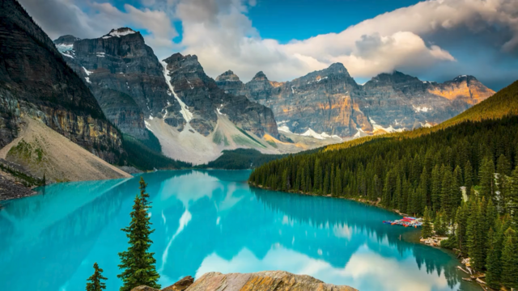
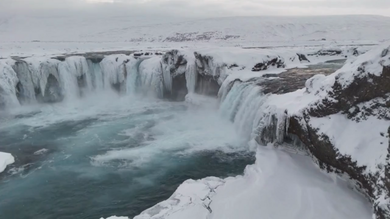
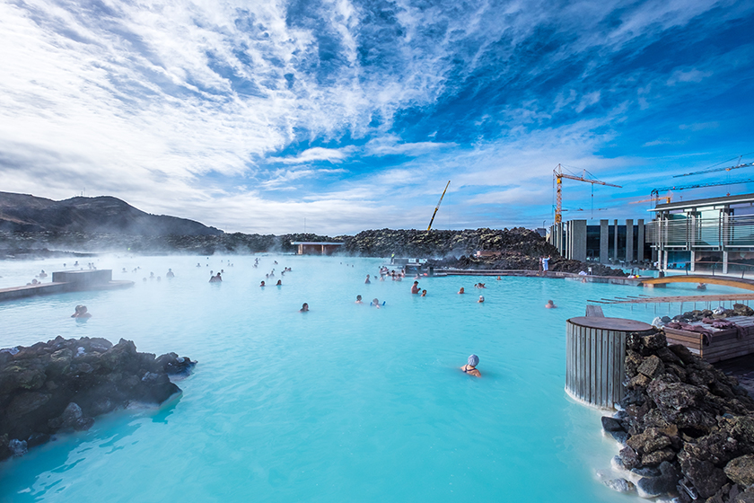
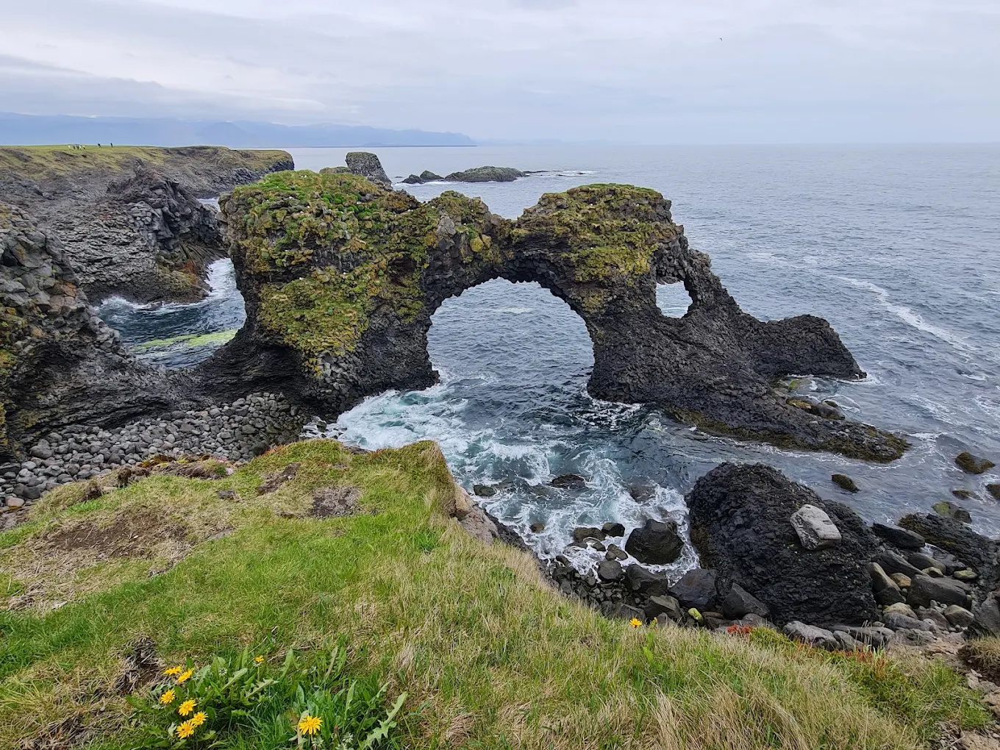

傑古沙龍冰河湖
冰山漂浮喺湖面，最後經河口漂向大西洋。
- 歷史文化
- 冰河湖隨冰川後退，由20世紀起逐漸形成，附近黑沙灘有「鑽石沙灘」之稱。
- 交通
- 由雷克雅未克沿一號公路約5小時車程，多數人自駕或參加旅行團。
- 貼士
- 可選擇兩棲船遊湖；冬季路面濕滑要小心。
主頁 ／ 冰島
火與冰之島，極光之地
冰島有冰川、火山、瀑布同溫泉。黃金圈、藍湖、黑沙灘同冬季極光，構成一個得天獨厚嘅自然舞台。
挪威人英格爾夫·阿納森傳統上被視為首位定居者，首都雷克雅未克因而得名「冒煙灣」。
辛格韋德利成立阿爾庭，係世界最古老嘅議會之一，今日屬世界遺產。
中世紀冰島人以古諾斯語寫下薩迦，保存北歐神話同歷史，至今影響冰島人嘅文化自豪感。
揀一個月份，睇吓適唔適合去。
凱夫拉維克機場距雷克雅未克約45分鐘車程。環島旅行最方便係租車（冬季留意路況同四驅需求）；亦可參加當地旅行團。

冰山漂浮喺湖面，最後經河口漂向大西洋。

黃金圈上最壯觀嘅兩級瀑布，水量豐沛。

乳藍色地熱溫泉，位於火山熔岩地帶。

位於歐亞同北美板塊交界嘅裂谷，景色開闊。